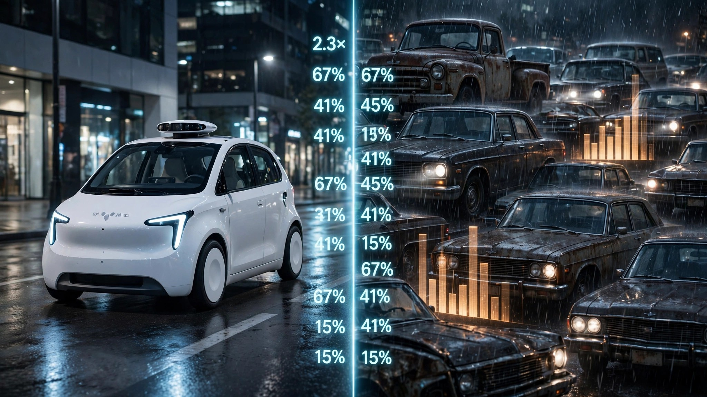

Waymo Is 68% Safer Than You. But “You” Includes 100,000 Drunk Drivers.

I ran the numbers. Then I ran them again. They didn't get better. Last week, IIHS published a study showing Waymo's driverless vehicles crash 68% less often than human drivers per vehicle mile traveled.[1] Across 50 million driverless miles in Phoenix, San Francisco, Los Angeles, and Austin, Waymo logged 1.28 police-reportable crashes per million VMT. Humans in those same cities: 4.06.
That 68% figure made headlines everywhere. Nobody decomposed it. So I did.
FARS toxicology data from 490,736 drivers in fatal crashes shows that 20% were impaired: 15.1% alcohol-positive, 8.7% drug-positive.[2] Impaired drivers crash at roughly three times the sober rate. Remove them from the denominator and the baseline human crash rate drops from 4.06 to approximately 2.9 per million VMT. Waymo's advantage against sober humans shrinks from 68% to about 56%. Still impressive. But a different number than the one in the press release.
Then there's the fleet. IIHS compared Waymo (a fleet of brand-new, sensor-laden Jaguar I-PACEs worth six figures each) against the American vehicle fleet average. That average includes a Chevy Cavalier with an 85.7% crash-to-fatality ratio and a Hyundai Veloster with a death rate of 8.54 per 100 million VMT. It also includes a Mazda CX-5 at 0.12 and a Toyota RAV4 at 0.19.[2] The spread between the safest and deadliest cars in FARS is 65 to 1. "Average human driver" is averaging across a 65x safety chasm.
A sober driver in a 2024 RAV4 already operates at a fatality rate so low it rounds to statistical noise. Waymo isn't being measured against that driver. It's being measured against the pool that includes her AND the guy doing 90 in a 2003 Cobalt at 2 a.m. with a .14 BAC.
None of this means Waymo isn't genuinely safer. The 81% reduction in injury crashes and 85% reduction in single-vehicle crashes are real achievements that no amount of denominator math erases.[1] Waymo doesn't fall asleep. Waymo doesn't text. Waymo doesn't rage. And the Q1 2026 national fatality rate just hit 0.99 per 100 million VMT — historic, yes, but still 7,770 people dead in three months.[3]
But the 68% headline obscures what the technology actually displaced. Strip out the impaired drivers Waymo can't be, and the aging fleet Waymo doesn't drive, and you're left with a narrower, though still meaningful, gap between the robot and the responsible human in a modern crossover. The real question IIHS should answer next: what's Waymo's crash rate versus the median sober driver in a vehicle built after 2018? That comparison would tell us what autonomy actually adds. This one tells us what sobriety and a six-figure car already subtract.
Sources & References
What to do: If you're shopping for a car and someone cites the Waymo study to argue human driving is inherently dangerous, ask which human and which car. A sober driver in a current-generation crossover with AEB and lane-keep assist is already operating in the safest statistical band FARS has ever recorded. The Veloster doesn't represent you. Neither does the guy asleep at the wheel of a 2001 LeSabre. Waymo's real competition isn't "average." It's the floor that modern engineering already built.